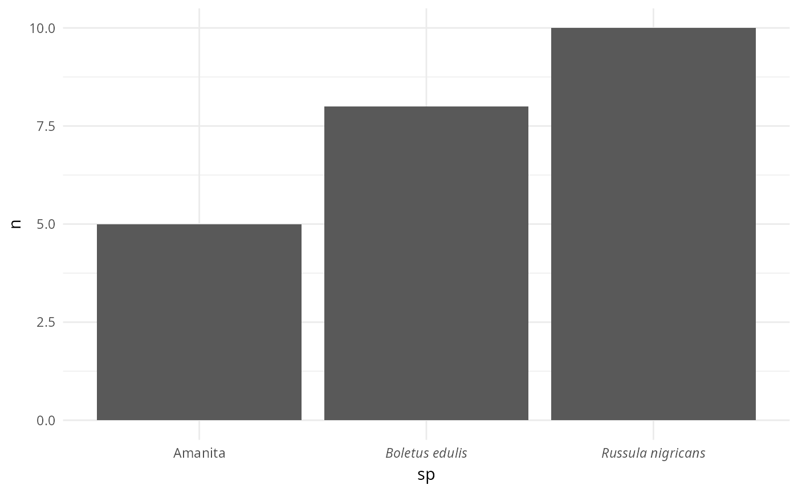

A drop-in replacement for [ggplot2::scale_x_discrete()] that automatically renders binomial species names (labels containing a space) in italic using plotmath expressions, while leaving single-word labels unchanged. Works with any theme, including complete themes like [theme_idest()].
Examples
library(ggplot2)
df <- data.frame(
sp = c("Russula nigricans", "Amanita", "Boletus edulis"),
n = c(10, 5, 8)
)
ggplot(df, aes(x = sp, y = n)) +
geom_col() +
theme_minimal() +
scale_x_italic_species()
